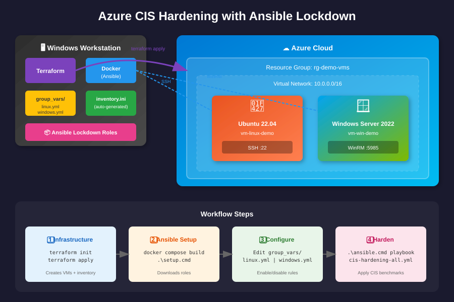

🚀 Interactive Tools
📁 All Documentation Files
Architecture Diagram (SVG)

SVG preview not available'">
📊 Mermaid Diagrams
01 - Architecture Overview
flowchart TB
subgraph LOCAL["🖥️ Windows Workstation"]
TF[("Terraform")]
DC["Docker Container
Ansible"]
FILES["Project Files"]
end
subgraph AZURE["☁️ Azure Cloud"]
subgraph RG["Resource Group"]
LINUX["🐧 Ubuntu 22.04
SSH :22"]
WIN["🪟 Windows 2022
WinRM :5985"]
end
end
TF -->|"terraform apply"| RG
TF -->|"generates"| FILES
DC -->|"SSH"| LINUX
DC -->|"WinRM"| WIN
FILES -->|"mounted"| DC
02 - Deployment Workflow
flowchart LR
subgraph SETUP["1️⃣ Setup"]
A1["Clone"] --> A2["Configure"]
A2 --> A3["Build"]
end
subgraph INFRA["2️⃣ Infrastructure"]
B1["init"] --> B2["apply"]
B2 --> B3["VMs Ready"]
end
subgraph ANSIBLE["3️⃣ Ansible"]
C1["setup.cmd"] --> C2["Roles"]
end
subgraph HARDEN["4️⃣ Harden"]
D1["group_vars"] --> D2["check"]
D2 --> D3["apply"]
end
SETUP --> INFRA --> ANSIBLE --> HARDEN
03 - CIS Hardening Flow
flowchart TB
subgraph CONTROLS["📋 Controls"]
GV_L["group_vars/linux.yml"]
GV_W["group_vars/windows.yml"]
end
subgraph PLAY["📄 Playbooks"]
PB["cis-hardening-all.yml"]
end
subgraph ROLES["🔧 Roles"]
R_L["ubuntu22_cis"]
R_W["win2022_cis"]
end
subgraph TARGET["🎯 Targets"]
T_L["🐧 Linux"]
T_W["🪟 Windows"]
end
GV_L & GV_W --> PB --> R_L & R_W
R_L --> T_L
R_W --> T_W
06 - Audit Workflow
flowchart LR
subgraph TRIGGER["📅 Trigger"]
CRON["Schedule"]
MANUAL["Manual"]
end
subgraph RUN["🔧 Audit"]
GOSS["Linux: Goss"]
PS["Windows: PS"]
end
subgraph OUTPUT["📊 Output"]
JSON["JSON Reports"]
DASH["Dashboard"]
DT["Dynatrace"]
end
CRON & MANUAL --> GOSS & PS --> JSON --> DASH & DT